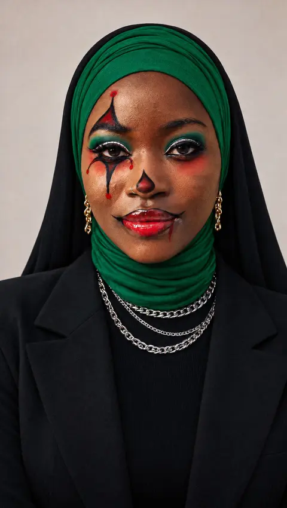

Free Tutorial
Steal My
Prompt
Ocean Eyes - Halloween Edition
Two steps
One hand,
another face
- The image.
GPT Image 2.5 Sunburst, 9:16. Your own face goes in as @image1, the Halloween look you want as @image2. What comes back is one portrait: your face, their makeup, their hair, their outfit. That portrait carries the whole second half of this edition, so get it right before moving on.
- The video.
Seedance 2.5, 9:16. The two pictures go in, and the prompt does the rest. It writes the room, the sofa, the phone in its stand and every second of the gesture, and it says twice over which picture owns the face and which one owns only the look.
Two pictures in, one portrait out, one clip after that

The Image
One portrait, front on, both eyes open. Your face stays yours, only the makeup, the hair and the outfit come from the look you picked. This picture is what the video is built on, so take the time to get it right.
- Model
- GPT Image 2.5 Sunburst
- Ratio
- 9:16
Use @image1 as the exact facial identity reference of the person and @image2 as the precise styling, makeup, and outfit inspiration. Preserve the person's recognizable facial structure, eyes, hair-length, eyebrows, nose, lips, skin tone, and natural proportions. She must remain clearly recognizable as the person from @image1. Change her Makeup, Hair color and Styling and Outfit to match the look from @image2
Load these two
Your face
The look


The Video
- Model
- Seedance 2.5
- Length
- 10 s
Load these two
Your face
Step one
OCEAN EYES LOOK REVEAL · 10 seconds · vertical 9:16 · one continuous phone video, one unbroken take from the first frame to the last IDENTITY THEIR FACE IS THE FACE FROM @image1 IN EVERY FRAME. The person in this video is exactly the person in @image1: the same face, the same eyes and eye colour, the same skin tone, and the same body, whatever their gender, age, or body type. CAMERA AND FORMAT This is a real vertical phone video, filmed with the front camera of a smartphone mounted in a small stand on the coffee table in front of the sofa, about forty-five centimetres from their face once they lean forward. The phone sits at the height of their neck: the lens is level with their throat and tilted slightly upward, so we look at their face from just below eye level and a strip of the ceiling shows above their head. The camera is the phone itself, and we see only what that phone sees: it is the eye of this video rather than an object inside it. It is an ordinary phone lens, and the picture fills the whole 9:16 frame, edge to edge and corner to corner. The camera is static: the picture stays locked in place, perfectly still, for all ten seconds, like a phone fixed firmly to the table. Focus is locked on their eyes, so anything that comes very close to the lens turns large, soft and creamy while their eyes stay crisp. Everything moves at real-time speed, the natural pace of a phone video. THEIR POSITION At the start they sit upright and relaxed on the sofa, their back against the backrest, forearms resting on their thighs, a little further from the phone: the framing shows their head and upper body down to the waist, their face smaller in the upper middle of the picture. They sit slightly sideways to the camera: their body is turned about thirty degrees, so the shoulder on the left side of the frame is closer to the lens than the other one, and they turn their head so their face looks straight into the lens, tilted a few degrees. From 1.4s they slide to the front edge of the sofa and lean their whole upper body far forward toward the phone, bending from the hips, forearms on their thighs, so their face and shoulders come close to the lens and their chest is nearer to the camera than their hips. In this forward lean the framing is tight: a narrow strip of ceiling above their head, the top of their hijab just below the upper edge, their eyes at about one third of the frame height from the top, their shoulders spanning almost the full width of the frame, their arm on the left side of the frame running down along the left edge, and at the bottom of the frame their thighs on the sofa, angled toward the camera. From then on they stay in this forward lean until the last frame. THE ROOM They sit on a deep charcoal fabric sofa in a dark, cosy apartment living room at night. The room is lit only by a few warm yellow lights, and most of it falls into soft shadow. Small recessed ceiling spotlights in a warm yellow tone cast soft round pools of light on the dark taupe wall behind them. Behind them, on the right side of the frame, stands a low wooden shelf with a warm yellow LED strip under each shelf board, glowing gently over a few books, a small green plant and a matte ceramic vase. On the left side of the frame, further back, a floor lamp with a cream linen shade glows warm amber. Three landmarks hold steady in every frame of the video: the warmly lit wooden shelf behind their shoulder on the right side of the frame, the round pool of spotlight on the wall above their head, and the cream floor lamp on the left side of the frame. LIGHT Their face is lit by soft, warm golden light from the floor lamp side and the ceiling spot above, which gives gentle shadows on one side of their face and a small warm catchlight in each eye. The spotlight draws a thin golden rim along their hair and the tops of their shoulders. Exposure, white balance and contrast stay exactly the same for the whole video: the same brightness on their face, the same golden rim on their hair, the same warm pool of light on the wall. THEIR LOOK AT THE START (0.0s to 5.2s) Their white scarf, their eyes and their face look exactly as in @image1, natural and everyday. They wear casual homewear: a plain fitted long sleeve black t-shirt and classic blue jean long skirt. Their nails are short, clean and natural, the same nails for the whole video. HANDS AND OBJECTS FOR ALL TEN SECONDS The phone stays in its stand on the table for the entire video, so both of their hands are free. Exactly one hand moves: the hand on the right side of the frame performs the whole gesture. Their other forearm rests on their thigh, on the left side of the frame, for all ten seconds. Their hands are empty. One gesturing hand, one resting hand, one phone in a stand. TIMELINE 0.0s to 1.4s · THE CALM HOOK They sit upright and relaxed on the sofa in the long sleeve black t-shirt and blue jean long skirt, back against the backrest, turned about thirty degrees, forearms resting on their thighs. They look straight into the lens with a soft playful pout. Then the pout melts into a small closed-mouth smile that rises a touch higher on one side. Their head tilts slowly a few degrees toward their shoulder. Their eyes stay on the lens. 1.4s to 2.2s · THE LEAN In one smooth, unhurried movement they slide to the front edge of the sofa and lean their whole upper body far forward toward the phone, bending from the hips, eyes on the lens the whole way. Their face grows in the frame until it fills the tight framing described above, forearms settling on their thighs. 2.2s to 8.0s · THE HAND (one unbroken movement: it rises, glides toward the lens, covers it, and draws back again) At 2.2s their hand rises from the lower right corner of the frame. The whole arm is part of it: the shoulder on that side drops slightly, the upper arm stays close to the body, the forearm lifts diagonally upward out of the lower right corner, and the wrist turns outward. The hand arrives sideways to the camera, seen from its thumb side, the way someone shows a tiny amount between two fingers. The index finger and the thumb both stretch out long and straight, horizontal, pointing toward the left edge of the frame and parallel to each other: the index finger on top, the thumb underneath, with an open gap of about two centimetres between them. Only these two fingers are extended: the middle finger, ring finger and little finger are folded firmly into the palm, below and behind the thumb, out of sight. The long side of the index finger and the edge of the thumb face the lens, and the clean nails catch the warm light in two small highlights. The hand is held at the height of their eyes, a little to the right of their nose, with the fingertips pointing across their face, so their face stays visible through the gap and beside the fingers. The pose is calm and relaxed, the fingers presented in profile. From 2.8s the hand glides slowly and smoothly straight toward the lens, along the line between their eyes and the camera, a controlled movement at real-time speed. The fingers keep their sideways horizontal pose the whole way. As they come closer they grow large in the frame and soften into focus blur: warm skin, fine creases across the knuckle of the index finger, the soft sheen of the nails. Around 3.8s the fingers are so close that they span the whole width of the frame as two thick, soft horizontal bands of skin, the index finger across the upper part of the picture and the thumb across the lower part, and between them a horizontal window. In that window, sharp and in focus, are both of their eyes: their irises in their own colour from @image1, the bright catchlights, the lashes, the arch of the brows and the bridge of the nose. They hold this for a moment and look straight through the window into the lens with a slow, steady gaze and a tiny lift of the brows. From 4.6s the hand keeps coming. The window narrows as the thumb rises and the index finger lowers, the soft pads of finger and thumb meet, and at 5.2s they press gently onto the lens itself. The pads cover the whole lens, edge to edge and into all four corners. The warm room light shines through the skin, so the entire frame glows a deep warm red-brown, darkest in the centre and slightly lighter toward the edges, with faint fingerprint texture. The phone stays perfectly still in its stand at the touch. The picture stays fully covered by the fingertips for about four tenths of a second, and in that moment they lean in a few centimetres closer to the lens. At 5.6s the pads lift off the lens and the warm red glow brightens as the light returns. Finger and thumb part only a little at first, very slowly, and open a narrow horizontal window. Their face is now so close to the lens that the window shows only their eyes, large and sharp, from one side of the window to the other: the eyes, brows and eye make-up exactly as they appear in @image2. They stare through the narrow window into the lens with a slow, intense gaze, eyes wide open and bright, while the fingers keep opening slowly, millimetre by millimetre. From 6.6s the fingers open at normal speed, all the way, and the hand draws back the way it came, toward the lower right corner, while they ease back a few centimetres into their earlier forward lean. The fingers sharpen as they leave the lens, still sideways and horizontal, and the window widens until their whole face, their hair and their new outfit are visible. At 7.6s the hand lowers out of the frame at the lower right corner and that forearm settles back onto the thigh. Behind the hand the room continues on both sides of the moment the lens is covered: the warmly lit wooden shelf behind their shoulder on the right side of the frame, the round pool of spotlight on the wall above their head and the cream floor lamp on the left side of the frame are all exactly where they were, glowing with the same steady warm light. The phone stands exactly where it stood, with the same framing, the same distance and the same neck-height angle. They sit in exactly the same place on the same sofa, turned at the same thirty degrees; after the touch they are a little closer to the lens for a moment, then settle back into the same forward lean, their shoulders and face at the same size in the frame as before the hand came. The light on their face has the same brightness and the same warmth, and the golden rim sits on their hair in the same place. Only their look has changed. THEIR NEW LOOK (from 5.6s to the last frame) THEIR FACE IS STILL THE FACE FROM @image1. Their new look comes from @image2 and is taken exactly as it is: the hairstyle and hair colour, the eye colour, the complete make-up, every garment, scarf every accessory and every piece of jewellery in @image2 are on them, in the same colour, material, shape and fit. Whatever is in the picture, they are wearing. @image2 gives only their look: the room, the light, their sitting position, their forward lean, the thirty-degree angle and the framing stay exactly as described in this prompt. 8.0s to 10.0s · THE LAST LOOK With the hand gone, they lean their head slightly forward and lower their chin, so they look up into the lens from under their brows. Slowly the corners of the mouth lift into a confident, knowing smile that suits the new look. They tilt their head slowly a few centimetres to the side and hold the stare, eyes wide and bright. At 9.2s the smile deepens by a tiny amount. Then they hold the final look calmly into the lens until the last frame, with only their breathing moving their shoulders. PERFORMANCE At the start they play it sweet and teasing, relaxed at home on a Friday night. At the end they play the character of the new look with calm confidence: the face is relaxed, the smile is slow, and the eyes do most of the work. SKIN AND REALISM Their skin is real skin: visible pores across the nose and cheeks, natural asymmetry between the two sides of the face, and tiny flyaway hairs at the hairline in the first look. The make-up from @image2 has real texture on real skin: powdery where it is matte, slightly uneven at its edges, wet and reflective where it is glossy, with the pores of the skin visible underneath. Up close, the fingers show real skin detail: soft creases, faint fingerprint ridges, a slight flush at the tips and a clean reflection on the nails. Face skin must match with the hands SOUND The soundtrack is quiet room tone: the faint rustle of fabric as the arm rises and a soft tap when the fingertips touch the lens. The lips stay closed until the smile, and the smile itself is silent. COLOUR AND IMAGE The image looks like a high-end smartphone recording at night: a warm palette of amber, honey yellow and soft brown in the room, deep shadows, warm natural tones on the skin, and the colours of the new look from @image2 rendered exactly as they appear in that picture. CONTINUITY SUMMARY One person, one sofa, one room, one static phone in a stand at neck height, one continuous take of ten seconds. They sit upright for the first moment and lean far forward toward the lens from 1.4s, and stay in that forward lean until the last frame. The warmly lit wooden shelf behind their shoulder on the right side of the frame, the round pool of spotlight on the wall above their head and the cream floor lamp on the left side of the frame are in the same place in every frame. The gesturing hand always comes from the lower right corner, sideways, only index finger and thumb extended, index finger above, thumb below, both horizontal and pointing toward the left edge of the frame. The other forearm rests on the thigh for all ten seconds. Their face is the face from @image1 in every frame, in both looks.
That’s it
Now go and make
your own inside Fuse Atelier
Open Create and choose Seedance 2.5. For this workflow, select 9:16 and set the clip length to match your prompt. Upload your selfie as @image1 and the painted portrait as @image2. Paste the video prompt from page 4, then hit Generate and let it cook.
Go To Create